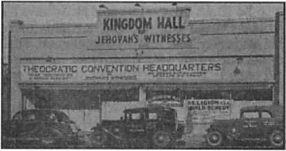
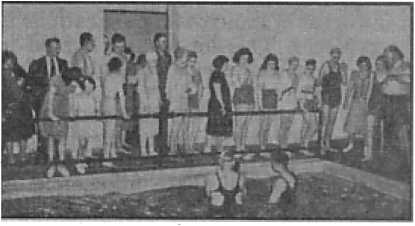

Japan Oppressed by the Devil The Pitiful Descendants of the “Gods” Primitive Sanitary Conditions Women and Girls
Five Cents a Copy One Dollar a Year
Vol. XXIII No. 587
March 18, 1942
$1.25 In Canada and Foreign Countries
Published Every Other Wednesday
Contents
Japan Oppressed by the Devil (Part 3)
Britain Joins, the United States
The Pitiful Descendants of the “Gods”
New Government
Democratic Exchange of Correspondence 12
In One of America’s Largest Cities
Constrained Attendance at Church
“Thy Word Is Tfuth”
Some of Man’s Silent and Beautiful Friends 19
Under the Totalitarian Flag
A Warning by the Ulster Protestant
Subversive Work in the Philippines
British Comment
Published every other Wednesday by WATCHTOWER BIBLE AND TRACT SOCIETY, INC.
117 Adams St., Brooklyn, N. Y., U. S. A.
Editor Clayton J. Woodworth
Business Manager Nathan H. Knorr
Five Cents a Copy
a year in the United States ?1.25 to Canada and all other countries
NOTICE TO SUBSCRIBERS
Remittances: For your own safety, remit by postal or express 'money order. When coin or currency is lost in the ordinary mails, there is no redress. Remittances from countries other than those named below may be made to the Brooklyn office, but only by International postal money order.
Receipt of a new or renewal subscription will be acknowledged only when requested. Notice of Expiration is sent with the journal one month before subscription expires. Please renew promptly to avoid loss of copies. Send change of address direct to us rather than to the post office. Your request should reach us at least two weeks before the date of issue with which it is to take effect. Send your old as well as the new address. Copies will not be forwarded by the post office to your new address unless extra postage is provided by you.
Published also in Afrikaans, Bohemian, Danish, Dutch, Finnish, French, German, Greek, Hungarian, Japanese, Norwegian, Polish, Portuguese, "Spanish, Swedish, Ukrainian; also special Australian edition in English.
OFFICES FOR OTHER COUNTRIES
England 34 Craven Terrace, London, W. 2
Canada 40 Irwin Avenue, Toronto 5, Ontario
Australia 7 Beresford Road, Strathfield, N.S.W. South Africa 623 Boston House, Cape Town
Entered as second-class matter at Brooklyn, N. Y., under the Act of March 3, 1879.
Altered in Transit?
♦ A New York Times comment on the Pearl Harbor report remarks:
The Secretary of State kept the War and Navy Departments constantly informed for months of the gravity of relations with Japan. Yet these warnings appear to have been of a general rather than a sharply specific character by the time they reached those in command at Pearl Harbor and their principal staff officers. At all events, the Roberts Commission says of those in command at Hawaii that “Without exception, they believed that the chances of such a raid while the Pacific Fleet was based upon Pearl Harbor were practically nil.”
From which it appears that somewhere along the line the important warnings were robbed of their effect, with the resultant effect of inflicting severe injury on the fleet and air force. Now, who would have been interested in accomplishing such an effect? Doubtless the totalitarians are all in complete agreement on the desirability of putting the finishing touches on democracy. The oldest totalitarian line-ups in existence are the Japanese and the Roman, and there is not the least doubt that these two are working together. The Jesuits are never mentioned in the press, yet are the most deadly and effective enemies of democracy, and their activities should be closely watched by government agencies appointed to guard against espionage. Yet the chances are good that the Jesuits have their agents in these very organizations, as well as in other important posts. Catholics, while by no means all in sympathy with the Jesuit system, are, in the very nature of things, more likely to be used by that system. Jesuit support of the Japanese cause is indicated in the series of articles now running on “Japan Inspired, Deceived, Oppressed, Ruined, by the Devil.” Who and what deprived these important communications of their effect?
“And in His name shall the nations hope.”—Matthew 12:21, A.R.V.
Volume XXIII Brooklyn, N. Y., Wednesday, March 18, 1942 Number 587
Japan Oppressed by the Devil
{In Four Parts—Part 3)
ONCE it is well established that any person is a habitual, malicious and willful liar, such person should be avoided thereafter by every person who hopes to keep clean hands and a pure heart. On this basis it is hard to see how America can hereafter have anything to do with the lying “statesmen” of Japan except as a matter of absolute necessity.
America can lift up its head at the statement of Cordell Hull made to Ambassador Nomura and Special Envoy Kurusu of Japan at the very time that the world’s champion double-crossers were unloading bombs on Pearl Harbor:
I must say that in all my conversations with you [the Japanese ambassador] during the last nine months I have never uttered one word of untruth. This is borne out absolutely by the record. In all my fifty years of public service I have never seen a document [handed to Mr. Hull by the Japanese representatives just previously] that was more crowded with infamous falsehoods and distortions—infamous falsehoods and distortions on a scale so huge that I never imagined until today that any government on this planet was capable of uttering them.
It is impossible to shame a liar. No habitual and vicious liar has any but selfish objectives in view. Nothing such a person says can be believed, and a guttersnipe that tells the truth is a prince compared with a potentate whose word is no good. Emperor Hirohito of Japan, who must certainly have known of Japan’s careful and long preparation for the treachery which culminated at Pearl Harbor, said after the attack had begun (and showed his word is worth nothing when he said it):
Establishment of peace in the Pacific, and consequently of the world, has been the cherished desire of His Majesty, for the realization of which he has hitherto made his government to continue its earnest endeavors.
America has been the Simple Simon of diplomacy, and that is one reason her people love her and why they hate and despise the hypocrites whether in the Vatican, the German chancellery or the mikado’s roost in Tokyo.
Who was it, Wendell Phillips or William Lloyd Garrison, that said he proposed to tell the truth on the slavery question “though the heavens fall” ? Well, he told it the best he could; and slavery ended, did it not?
The first inning of the liar always looks good to the liar and to the hypocrite, but it doesn’t look good to the great and good and just God. And the first inning is not the whole game. It’s the final score that really counts.
Some Facts About Pearl Harbor
Pearl Harbor is America’s mightiest naval base. Shaped like the human hand, the entrance is like the wrist, the harbor itself is like the palm, and then there are five long and wide inlets to form the fingers. The whole Pacific fleet could anchor in Pearl Harbor at one time. In the last forty years the United States has expended $260,000,000, with a view to making it impregnable. The Harbor is about ten miles from Honolulu. In one of the inlets is a $10,000,000 drydock, and at the entrance are two great fortresses, Weaver and Kam eham ena, equipped with 12-inch and 16-inch guns and a great variety .of smaller ordnance.
Just one week before the treacherous attack, the Honolulu Sunday Star-Advertiser had a headline eight columns wide screaming, “Japanese May Strike Over Week-End!” The same story contained the news from Washington that Saburo Kurusu, the hypocritical Japanese “peace” ambassador,'had been “bluntly warned the nation was ready for battle”. The great humiliation followed just seven days later.
There were bright spots in the story of Pearl Harbor. A motor launch with five men aboard saved almost 100 men from one battleship; these men had been injured or blown overboard into oil-fired waters. When the launch’s propeller jammed and the flames were licking around its wooden hull the naval reserve ensign who had volunteered as its skipper directed the disengaging of the screw and the picking up of more victims from the harbor. Isn’t that something to be thankful for?
Some 3,000 American boys were slain, but it was not all one-sided, not quite. One 5-inch aircraft gun was left with but one man, after his battery mates had all been shot down, ten of them. This lone man operated the gun. He seized a shell, placed it in the tray, dashed to the other side of the gun, rammed it home, took his position on the pointer’s seat, and fired. After the third round, an explosion blew him overboard; but he was rescued.
Britain Joins the United States
Less than a month before the Japanese attack on the United States Churchill said that Britain would join the United States, if attacked by Japan, and do so “within the hour”. Britain did. At the same time Churchill said, <fWe . . . make it absolutely clear that whether we are supported or alone, however long and hard the toil may be, the British nation and His Majesty’s government at the head of that nation in intimate concert with the governments of the great dominions, will never enter into any negotiations with Hitler or with any party in Germany which represents the Nazi regime.” Whether this will mark the policy of Great Britain and America toward Japan remains to be seen, but it may well apply to Japan’s unscrupulous military clique.
While Japan’s actual attack upon America was preceded by a period of great tension, it was nonetheless treacherous. Japan was all set to make the attack right along. On the last of November Lieut. General Kisabura Ando said that the Chungking regime of China would collapse as soon as Japan isolated it from American aid, and that the Netherlands East Indies would be “summarily treated” as sooh as Japan decided to move in that area. On the same day the ABCD powers were stated to be “collaborating fully in preparation for any eventuality”, in view of Japan’s evident determination to refuse any proposals for a settlement in the Pacific.
The Japanese General Tojo said that American and British “exploitation” of Asiatic peoples must be “purged with a vengeance”. Of course, Japan had not been doing any exploiting! True she had invaded China in 1932, but that was to ‘protect the Chinese’!
Yet the probability of war between Japan and America seemed remote, even though the possibility was seen in 1935, at which time some consolation was derived from the fact that the Japa-nese would, in the event of war, have but a six-month supply of oil, essential to naval warfare.
Toward the end of 1941 America pulled the marines out of Shanghai, which event the New York Daily News foresaw as marking the approaching end of extraterritoriality in China.
Japanese conversations with America reached a stalemate because of Japanese moves into Indo-China, threatening Singapore and the Philippines. Application of an economic blockade by the United States was too much for Japan, unwilling to recede from its position, and unable to stand the pressure put upon her. The triple purpose of the Nipponese policy was, (1) No obstruction by Third Powers to “a successful conclusion of the China Affair’’. (2) Lifting of “the economic blockade” by the United States and Britain against Japan and a halt to the “military encirclement” of the Japanese Empire. (3) No spread of the European war to East Asia. It will be noted that in these demands there was no give, but all take.
No Honest Desire to Avoid War
Looking back now, it is evident to America that Japan had no real desire to avoid war, but was merely playing for time, continuing the conversations even while getting ready to strike without warning and under cover of apparently friendly moves, suggesting a three-month “truce” or “cooling-off period” during which the conversations could be continued.
William Randolph Hearst was strongly against war with Japan, and said it would take years to conquer Japan. But it may be necessary for America to conquer Japan if it is to keep Japan from conquering the larger part of Asia and the East Indies, perhaps including Australia, and ultimately dominating the Pacific to a degree that would be most unwelcome. Japan is a part of the totalitarian abomination, and, as such, threatens the peace and freedom of the entire world. Hearst has, on the other hand, shown his own leanings toward totalitarianism in the past.
December 11, 1941, the New York World-Telegram carried an article about a Japanese naval textbook which showed the Japanese plan of attack almost exactly as it occurred Sunday, December 7, and which textbook had been turned over to the American Naval Intelligence a year ago last October. Information from secret sources, says the article, indicating that Japan would attack United States possessions in the Pacific in December, 1941, or February, 1942, was sent to the State Department more than a month before the attack. The warnings were sent by an underground information-gathering organization, the Sino-Korean People’s League, with an office in Washington.
In the Philippines the expected happened unexpectedly. The Filipinos had long been troubled over the course of Japan in taking over Manchuria, invading China, resigning from the League of Nations, abrogating the Washington Naval Treaty and announcing her intention to retain the Caroline Islands mandated to her by the League. Meantime Japanese goods continued to fill Philippine markets, and where importation of such goods was hindered by high tariffs the Japanese opened factories operated under Philippine names. The Filipinos foresaw the possibility that the independence they expected to get July 4, 1946, would prove to be such merely in name and for only a short time. They foresaw, too, that they would have immense difficulty in building an adequate defense, even in ten years and at the expenditure of $80,000,000. The hope that they could make an invasion too costly for Japan went up in smoke, as they watched their northern neighbor invade China regardless of expense. Yet Japan did not have an easy time getting supremacy, what with MacArthur’s prodigious resistance.
The day after its attack upon Pearl Harbor and Manila Japan’s expeditionary forces landed in Malaya, resisted by British land and air forces. There was also an air raid on the big naval base at Singapore, and at the same time ten Japanese ships attempted an invasion of Thailand and were attacked by British aircraft off Bangkok. Japan, lying like Hirohito, said the invasion was planned to “maintain Thailand’s independence”. When Japan had crossed the border, British troops entered by way of the Malay border.
Japan considered herself “encircled”, with British bases at Singapore and Hongkong, American bases at Cavite, Philippines, and Guam and Dutch Harbor, and a Russian base at Vladivostok. Japan is also within eight hours’ reach from Chungking, capital of China.
Now that Japan herself has started things, it is altogether probable that the highly vulnerable centers of Tokio-Yoko-hama and Osaka will experience some of the attention Japan has given Manila, with less likelihood of ability to withstand. Buildings housing the munitions industries at Osaka are made of wood, and the majority of Japanese homes are mere paper shacks. There would be slight chance of extinguishing incendiary bombs and preventing a general conflagration.
The Pitiful Descendants of the "Gods”
Writers have vied with one another in making Japan seem mysterious. The Japanese are no more mysterious than the Nazis and the Fascists and other overbearing, underprivileged, would-be world-rulers with the ego inflated with hot air. The Greeks identified or discovered the phenomenon of demon-possession or obsession that made men do things normal humans did not do or want to do. Paul saw through it, and marked it as diabolical, and of a piece with the devil-obsession current in Palestine about the time of the beginning of the “Christian era”. Hence, in Scripture the influence of demons is identical with the influence of devils, and the “gods” of the heathen are just that, no more and no less. The term “devil” means simply “slanderer”, and the first one to follow the course of slandering and opposing God and .righteousness is distinguished as the Devil, capital D. All those who from among the spirit realm followed him or his example are also devils, or demons. Invisible to mankind and unable to obtrude themselves into the consciousness of men unless the barrier of the will is lowered, these “gods” have nevertheless succeeded in playing an important part, potent for evil, in the affairs of the world.—See the booklet Angels; published by Watchtower.
All nations have records, legends and traditions, with at least a substratum of fact, of, these “gods”, “demons” or “devils”. Some of them they have mistakenly thought of as good, or considered it to their advantage to get in touch with them, whether directly or through mediums, spiritistic seances or what not. The result is always harmful, whether that fact be immediately recognized or not.
With these facts before one, it can be seen that there may be more than mere myth back of the Japanese claim to close affinity with the “gods”. But now to see what these “gods” have dished out for the generality of the Japanese people.
About half the population of Japan live on farms. The average farmer village groans under an indebtedness of $450 per household. One family in ten subscribes for a newspaper. There may be two radios in a farming village, if it is fairly “prosperous”, one of them in the village school. There is no • doctor. Midwives attend to the most necessary cases. In Japan the produce of the farms has not been sufficient for the growing population, and a thinning-out process was followed, and may still be, jiot of crops, but of babies, by means of mabiki or infanticide.
Japanese are reputedly very clean. The whole family, including the servants, all bathe in the same tub at the close of the day, and in the same heated water. First the father bathes, then the sons according to age, followed by mother and daughters in the same order, and the servants likewise. The last to bathe in a household probably gets used to using the used water. Anyway, there is no quarreling as to who follows whom in the use of the bathroom.
Washing clothes is simple enough; for the Japanese farmer does not wear much of anything. In summer a pair of cotton trousers, and perhaps a short kimono, which in winter is padded. Even in winter a farmer may not be able to afford additional garments, but if he is able he will wear one cotton undergarment through the winter in a climate as cold as that of New England.
The life of the farmer is meager. A little rice and a pickled radish for breakfast, the same for lunch, and more of the same for dinner, with perhaps some bean soup and fish added where it can be had. Hardly a meal for gods!
There is no furniture in the Japanese home, as a rule, unless it is a table. Beds are merely quilts spread on the floor, folded and put away behind sliding screens in the daytime. Thin mats serve as places to sit. Shoes are removed at the door, and an annual cleaning of the mats is considered enough! There is no time for unnecessary work. There is spinning, weaving, planting and other farm work to be done, by men and women, boys and girls.
For many years now farmers’ sons and daughters have gone to work in the mills, and sons have had to do soldier duty, from which at least some of them return, bringing back new ideas to the villages. The Japanese farmer is now less inclined to put up with the way things have been managed for him.
Trade Still by Barter
Almost without money, trade in the villages is conducted mainly by means of barter. Poverty tends to increase thefts, which police have difficulty in controlling. Everybody is in debt and underpaid.
Land is exceedingly scarce. The portion under cultivation is only 17 percent of the total area, and much of this is on mountain slopes difficult to cultivate. Large-scale farms are few. Most of the farms are paddy-fields, so constructed that they will hold water in the planting season. The farm of the Japanese family is less than one-thirtieth the size of an" average American farm.
Japan is now importing rice from Indo-China, but the people do not like it, as it is a softer rice than that which is home-grown. An effort on the part of the government to make them like it, by mixing one-fifth with four-fifths Japanese rice, was not successful. If cooked long enough to soften the Japanese rice the Indo-Chinese rice would be mush, and if undercooked to prevent this the Japanese rice would be hard. (The Israelites had a law against mixing grains.)
With the increasing food problem and because silk was not being exported as formerly, Japan began plowing up the mulberry orchards, on the leaves of which the silkworms fed, and changing them into grainfields.
Farm hands receive about 13 cents daily; women, 9 cents. Male silk-workers get from 18 to 30 cents; females, 15 to 18 cents.
Distribution of wealth in Japan is such that 60 percent is in the hands of one percent of the population and three-fourths of the people are living on less than half of what they should have for decent living.
The number of underfed children in Japanese schools is great, there being some 8,000 of these in the prefecture of Osaka alone. Many families have lost their livelihood on account of the war with China. The war with America and Britain will only increase the misery. The work-week is from 78 to 91 hours, and in some factories the daily stint is 19 hours.
Primitive Sanitary Conditions
In the larger Japanese cities the drinking water is admittedly pure, but sanitary conditions are still primitive. The Japanese bathe often, and they first scrub themselves before entering the common tub, private or public. But there is no safe sewage system in any Japanese city, not even in Tokyo. Carts that collect waste from humans stop in front of the largest office buildings in the capital, and buckets are emptied into the carts right in public. In the suburbs the carts do not come around so often, though supposed to call once a month. The smell of human dung is almost everywhere.
Rats are plentiful in the cities: gray, black and brown rats. Nobody pays attention to them, even when seen under tables in restaurants. In Tokyo there are some 10,000 stray dogs. In a single day twenty persons bitten by, them reported the matter to the police.
The Japanese are susceptible to tuberculosis and similar diseases. They are often seen to wear black or white filters over their mouths and noses when in the streets, but take them off in restaurants, moving-picture houses and other like places. Spitting is common. Trains have numerous spittoons sunk in the floors of coaches. These are at least aimed at, but by no means always successfully. The government has tried to discourage spitting without success.
Tokyo has ordered foam removed from beer before serving. It was discovered that expert beershooters could reduce the beer content of a schooner by 16 percent.
There are few automobiles in Japan, and often they are propelled by charcoalburning engines, the installation of which gives the car a cumbersome appearance.
Japanese houses are matchboxes. Fires are disastrous, as they tend to spread quickly through the flimsy, closely built structures.
The Japanese carry economy to an extreme. On account of the war with China an eighth of an inch was cut from matches.
All persons who leave Japan must declare the number of gold teeth and fillings they have and pay for taking the metal out of the country.
Women and Girls
The duty of women in Japan is to obey the men: daughters, their fathers; wives, their husbands; sisters, their brothers; and when old, obedience is still required —to sons. Japanese tradition holds that the wife is married to the household of the husband, and that is of first importance. The first act, thefi, after marriage was to go to the shrine and report to the dead souls of his dead ancestors that she was ready for work. If she did not like her husband, whom she had probably never seen before, that was too bad, but nothing could be done about it. She still had her job. If her husband did not like her, he could look for romance on the side, such as with the geisha girls, but she was still the first woman of his household, and that is where the women had their sphere. The war with China has made great changes in this code of triple-obedience. Women are now seen everywhere, doing the work of men away at the front. They serve as bellhops, gas-station attendants, conductors, caddies, bartenders and elevator operators, and are getting a kick out of their new freedom.
Tokyo now has a school to train soldiers’ daughters to be soldiers’ brides. First on the list of subjects is filial piety.
Yet there are many women in Japan who want their marriages dissolved; and a tree with an interesting history is found in a suburb of Tokyo, to which tree people go who want to be separated from their life-partners. They leave prayer pictures at the tree rather than counting beads or lighting candles, and it is doubtless every bit as good, which is no good. At first the tree was called ‘the god of marriage’, but evidently many who came to pray remained to jest, praying first for a loving marriage, and later coming back to pray for the privilege of parting, something that is generally frowned upon in Japan. Marriage for love is likewise the exception, as everything is usually arranged by parents, relatives or friends before the bride so much as sees her future husband.
If a daughter is pretty she is likely to be in demand for the houses of prostitution, and if the family is poor or in debt the chances are that she will be sold for two or three hundred yen, considered an advance on the girl’s “earnings”. But there will be many deductions for her cosmetics and kimonos, and the girl will probably remain the virtual property of the “tea-house keeper” for the rest of her life, such as it is. Death from disease generally comes comparatively early in life. The girl often goes into this arrangement with her own consent, for the sake of the family. This “sacrifice” on her part is considered a high honor!
In Yamagata province a certain block of land had been opened and placed on the market for sale. The villagers desired to buy the land, but could not raise the monfiy. They got together and decided to sell their daughters, 57 of them, into the vice quarters and buy the land.
Japanese women regard it a disgrace to cry out in labor. “Rigid self-control, avoidance of braggadocio, quiet behavior” are expected of the women as well as the men in the Japanese scheme.
A writer who told of 1,600 young girls working in a cotton factory told of spotless airy halls provided for them, and that they were well fed (on 5c a day). Another writer said these workers’ dormitories often had vermin in them.
Japanese women in recent years have been allowed to get something of an education, if they had the money to pay for it, which few had. Yet, among the 247 persons chosen from among 2,500 applicants, there were two women who passed in a bar examination in writing. If successful in the required oral examinations they will be the first woman lawyers of Japan.
After attacking Korea, Manchuria and China on the ground that she had to have more room for her growing population, and after slowly meeting defeat in China because of the loss of so many men, the Japanese Welfare Ministry announced that it would present medals to the 10,000 mothers in Japan who have ten children over six. The ministry also selected 100 young Japanese couples, advanced each of them a loan of $70, and agreed that no interest will be charged if they have a child in the second year. The principal was to be reduced 20 percent with each child born.
“Very Polite”
Being a very sensitive, not to say touchy people, the Japanese have stressed politeness to an extent that is probably unequaled anywhere else. It is a social crime to give an answer to a question in such a way as to make it unpleasant to the questioner. Nor should one ask for any favor that might make a refusal necessary. Blunt negatives and direct refusals are unknown in the Japanese code'. One must merely suggest or hint at one’s meaning. Failure to do so would mark one as a barbarian, and to the Japanese one of the serious charges against the people of other nations is that they are impolite! An instance of Japanese politeness is found in the story of an American who broke a rare bowl, five centuries old, when participating in a tea ceremony. 'The owner, without “batting an eye”, remarked: “Yes, that’s what always happens to that old cup.”
As has already been seen, however, Japanese politeness is thoroughly offset by its impoliteness; witness the facebiffing which it considered a suitable expression of its attitude toward Americans.
In Japan it is considered honorable to order a man to slit open his abdomen and permit his bowels to fall out to preserve his honor. And this is done in “a colorful ceremony” witnessed by important members of the government. In Japan this is called hara-kiri. It is just plain murder to Americans.
Japanese politeness requires them to smile when reprimanded; something that has resulted in plenty of misunderstanding when dealing with foreign employers.
Japanese seem to put very little difference between human and animal life. They do not kill unwanted domestic animals or newborn puppies, but put them out to shift for themselves, with about the same result. They cannot understand why Americans kill such animals painlessly, and yet would not think of killing, for instance, the famine-stricken people of China that wTay.
Japanese workers do not carry their politeness too far. In Japan, when employees are discharged, they receive two months’ pay, called “retirement money”. The American manager of the Japanese plant of the Singer Sewing Machine Company ignored this custom, with the result that the Japanese workers very impolitely wrecked his plant and destroyed records of installment sales.
But Suspicious
Japanese have had spyphobia for some time, with rather annoying results to resident and visiting aliens, who found themselves followed by plain-clothes men, stopped by police at almost every important crossroad and generally harassed, but always given profuse apologies when they took the matter to the police station. This was the experience of an American family that for years had lived in Japan, and spoke Japanese fluently.
This suspicion is but a reflection of the fact that many Japanese themselves are not on the up-and-up in their activities in America. It is those that are subversive themselves that on the slightest provocation suspect and accuse others of being subversive. Japanese activities in California have been organized in such a way as to give them every opportunity to spy on America under cover of being fishermen, small businessmen or what not. An article in Friday magazine of May 9, 1941, called attention to the extent of Japanese espionage and fifthcolumn activity in Mexico and California. Germans were often in evidence along with these Japan-directed activities. There was much photographing being done by “camera enthusiasts” and the films were brought to Japanese stores to be developed. It was easy to get to Japan from Manzanillo.
Japanese born in Japan but now living in America, particularly in California, may have America for their physical home, but Japan is their spiritual home, and claims their religious and patriotic loyalty. They try to indoctrinate their children with the same viewpoint, but not always with success. An article in Ken magazine of May 4, 1939, claimed that the Japanese in California are exceptionally industrious, moral, easily assimilated, and that those of American birth are becoming valuable and increasingly loyal citizens. What effect the war may have on the picture is another question.
Ken, in its issue of June 22, however, revealed that native Americans, some of whom are U. S. Army reserve officers, were co-operating with Japanese, German and Italian agents on the west coast in secret activities pointing to a plan for attacking the United States. It stated that present and former reserve officers of the American armed forces were building and helping to arm a secret army within the United States. The setup was complete, linking the German, Italian and Japanese consulates. They were all ostensibly interested in Communist activity in the United States, and by Americans, which was none of their business. At the same time secret Japanese, Nazi and Italian agents were storing drums of a German-made chemical near the naval and air base at San Diego, capable of sinking the American fleet without firing a single shot. Japanese navy officers were issuing orders to Japanese “farmers” just south of the American border to get more land for building emergency airfields.
The same paper mentioned that the Shiriya, a Japanese “naval” vessel, claimed immunity from search when it was in port, and at sea mysteriously changed its course, taking its oil cargo to an undisclosed destination in the Pacific. When in port its officers had mysterious conferences in a Tia Juana dance hall.
Seattle Churches Praise Them.
The Seattle Council of Churches, probably under the “spiritual” leadership of Bishop Shaughnessy, in November lauded the good character of the Japanese in the Pacific Northwest and assured them of the sympathy and co-operation of the church, saying, “Please do not hesitate to confer with any Christian pastor relative to any problem that may arise.”
But a newsletter published under date of July 9,1941, points out that there are approximately 90,000 Nisei (American citizens of Japanese ancestry) on the West Coast, of whom two-thirds held dual citizenship. In private Japanese language schools it was found that two sets of textbooks were on hand. One set was shown to investigators and contained nothing objectionable, while the set actually used preached loyalty to Japan and its “god emperor” and treason against the American government. Here is a sample:
As citizens of this country (Japan) and offsprings of this (Japanese) nation, we admire its brilliance. Our national language cannot be forgotten in our hearts, not even for a single day, especially if we remember that we are childrep of Gods. The objective of Japanese education, no matter in what country it may be, is to teach the people never to be ashamed of their Japanese citizenship. First comes language, and then history. We must never forget—not even for a moment—that we are Japanese citizens. , . , Be thankful you are a Japanese, and worship the Imperial family.
This trick of dual citizenship is a trick that has immense possibility for harm. It is a trick that has long been used by the Hierarchy and its religious orders. The Catholic population may be less culpable in this matter, but it is often a matter of uncertainty where the loyalty of a person lies whose religious allegiance is so closely identified with the totalitarian spirit of a foreign hierarchy that is religio-political in its aims and objectives.
Dies Investigation
Dies investigators in 1940 made a careful survey of Japanese activities along the West Coast. There were found to be 150,000 Japanese citizens in America (U.S.) all of whom were still Japanese citizens. Additionally, there were 50,000 second-generation Japanese, born in this country. Dies found that 200 key Japanese had been decorated by the emperor during the last two years. Many Japanese were in close co-operation with the Japanese government through the Central Japanese association, directed by Japanese consulates. Japanese truck gardens were found alongside oil tanks and strategic railroads. There were 5,000 Japanese located on terminal islands in Los Angeles harbor convenient to important oil tanks, airfields and shipbuilding companies. Japanese were found in possession of maps showing all the U. S. strategic points and fortifications and of a naval manual giving exhaustive and important information concerning all American riaval vessels. They also had documents showing the details of Pearl Harbor, the Panama Canal, San Francisco, Manila, Guam, and Vladivostok. Nothing like being well-informed! The Japanese had maps showing the location of submarine cables, mines, channels, wireless stations, Japanese consulates and air bases all along the West Coast. Dies had 52 witnesses ready and was all set to conduct hearings when Matthew Maguire, acting attorney general, sent him a letter to the effect that the State and Justice Departments and the White House were opposed to the inquiry. The greatest caution was deemed necessary in handling the exceedingly delicate situation.
Democratic Exchange of Correspondence From R. Judge,1
Hill Top, Ridgeway, Rayleigh, Essex.
10th September 1941 The Editor, Sunday Pictorial, Fetter Lane, London, E.C. 4.
Dear Sir:
Your newspaper excelled all others last Sunday in its article on Jehovah’s witnesses. It is difficult to imagine a more insulting and hate-provoking effort than this nonsense by Shirley Long, who could well have concocted it at home without wasting a journey to Leicester! Most of us arranged our holiday to attend the Assembly, and all those who were there know the true position to be very different from what was described in the attack by your reporter. If such lies and innuendos are to be taken as a sample of the “news” you provide, then it is foolish for anyone to place any credence in anything they read in your newspaper.
Here are some of the actual facts:
(1) Almost all delegates brought their rationed foods with them.
(2) People of good-will in Leicester were kindness itself and showed their sympathy in many different ways.
(3) Soon after the opening the delegates agreed voluntarily not to use trams and buses during workers’ rush hours and not to use cafes and restaurants in the city.
(4) Jehovah’s witnesses are against religion but proclaim the comforting message of God’s incoming Government. Jesus and His disciples weren’t interested in wars, either!
(5) Soldiers, in utter disregard of law and order, broke into the convention grounds at night and knocked one witness unconscious. They also attacked another after dark in one of the main streets.
(6) Home Guards have bragged that they carried out the smoke-screen exercise over the camping ground in order to cause annoyance and discomfort—and this with the connivance of certain persons who should have been there to prevent such hooliganism.
(7) Judge Rutherford would certainly have been present but for the wartime difficulty of travel to and from the States.
(8) Certain Dominions have banned the work of Jehovah’s witnesses as a result of pressure by the Roman Catholic Hierarchy. Your reporter would have heard some of the world-wide protests against this if he had been present on Sunday afternoon.
(9) A telegram was received from three prominent Protestant ministers in London, commending Jehovah’s witnesses for their bold stand for liberty and freedom.
The witnesses do not pretend to be interested in a war which is between various , nations of Satan’s organization on earth. Their efforts are devoted to the service of God and His Kingdom. If Shirley Long claims to be so ardent a supporter of the war effort, why is he not, say, in a munition factory or in the Pioneer Corps instead of taking up time and valuable paper in writing such mischievous rubbish?
I know, of course, that you will not have the courage to publish this letter, but, nevertheless, I sign myself,
R. Judge.
Child publishers of The Theocracy at Indianapolis, Ind.
13th September 1941
Dear Mr. Judge:
Thank you very much for writing to me following my article last Sunday on the subject of the Congress of Jehovah’s witnesses at Leicester.
The point I want to stress is that I am not concerned in the least with the religious beliefs held by these people, but that I am very much concerned with the fact that ten thousand of them can invade a busy city in wartime and announce that they are neutral about the War.
The question to me is: How can any person in a country fighting for its very existence profess neutrality about that fight?
We owe our daily food and also the fact that we are not in the same position as France to the men of the R.A.F., who smashed the German Air Force last September and to the crews of the two thousand British ships at sea, who bring our supplies to us.
These men risked and gave their lives. They are not neutral.
Yours sincerely,
(Signed) H. W. Shirley Long.
22nd September 1941
Dear Mr. Long:
I thank you for your letter of the 13th September regarding the Leicester Convention of Jehovah’s witnesses, and regret the delay in answering.
In all fairness I must point out that it is the newspapers, and not Jehovah’s witnesses, who have been doing all the announcing that the latter are “neutral” about the war! There was no need for us to mention this at the Assembly, as all delegates were fully conversant with the position. Leicester did not suffer, either. It has been estimated that the city benefited to the extent that about £9,000 was spent there by the conventioners.
Not being pacifists (“peace at any price”, etc.) Jehovah’s witnesses do not influence anyone against the war effort. They respect the wish of the majority to take up arms and fight. Conversely, they have the right to expect others to leave them alone to carry on their Scriptural work of proclaiming the incoming of God’s Kingdom, of righteousness—surely a very comforting message when millions have lost their faith as a result of the hypocrisy of “religion”.
The members of the R.A.F. and other forces may all be doing what they consider to be their duty—but so are Jehovah’s witnesses! In supporting armed force the majority are chiefly concerned with preservation of self, family or property and care little or nothing about Jehovah God and His service. They are entitled to their viewpoint, of course, even though this may not be right. On the other hand, Jehovah’s witnesses, as consecrated Christians in a covenant with God, are ready to lose their lives in His service.
They are not concerned with Number One like most people are. Many thousands of them have endured indescribable persecution in Nazi Germany, U.S.A., Canada and elsewhere, because they are moved by a spirit which knows no narrow personal or national bounds.
As they exist in all countries the effect of their neutrality in the midst of warring nations might be said to cancel itself out. If anything, Britain, so far from being adversely affected by their presence, tends to gain from the fact that Jehovah’s witnesses were far more numerous in Germany than here! In other words, there would today be many more thousands aiding the Nazi war machine if those individuals were not Jehovah’s witnesses. Pursuing the argument on the supposed “danger” of their activities, on the basis of reductio ad absurdum it should be quite obvious to anyone that there would be no necessity for wars if all, or even the majority, of the peoples of the nations were as law-abiding servants of God as are Jehovah’s witnesses!
We have every Scriptural precedent for neutrality. Abraham, Daniel, Nehemiah, Jesus, Paul and all other faithful witnesses for Jehovah were always neutral as regards warring nations not in a covenant with God—and therefore under the control of Satan. We follow in their footsteps and have just as much right to carry on our work as those whom you eulogize have for theirs— more, if anything, as ours is a Godgiven service, and not one born of ex
Kingdom Hall, Spokane, Washington
14
Betty (7) and Evelyn (10) Maupin; when asked why not in school explain they have been expelled from school for being Christians in West Virginia; they are efficient Kingdom witnesses.
pediency or fallible human reasoning.
No, Mr. Long, you should not condemn Jehovah’s witnesses merely because you yourself fail to understand their mission. Multitudes do appreciate it—and heed the Biblical warning given in the Acts of the Apostles: to leave God’s witnesses alone and not to oppose them, lest one should be found to be fighting against God.
Yours faithfully,
[Signed] R. Judge.
High-School Witnessing
♦ Place—The Waller Branch High School, Chicago. Date—January 31,1941. This took place in my music class. On this day they were singing patriotic songs. When they had finished singing “The Star-Spangled Banner”, a girl raised her hand, and, upon being recognized by the teacher, said, “Can’t something be done about those people who live in the United States but who don’t salute the flag or sing “The Star-Spangled Banner?” The teacher answered,

Joy Armes; parents are pioneers; when 3-1 she was arrested for being a Christian in Oklahoma. Before being jailed she said, “I forgot to leave a Kingdom News; wait a minute,” and while the police fumed she calmly returned. After 3i hours in jail, Joy said, “I guess Jehovah caused His angels to let us out, just like He did the apostles.”
“Well, there is a certain sect or cult, whose name I can’t remember, who don’t salute the flag. Their case has been brought up in the Supreme Court, but I don’t believe I know what the decision has been.”
Then, upon recognition, I spoke, saying, “Jehovah’s witnesses are not a sect or cult, but a Christian organization.”
Then the girl sitting behind me whispered, “Are you one of Jehovah’s wit-, nesses V’
I nodded yes. Not satisfied at having answered emphatically enough by nodding, I turned around and, looking straight at her, said, “That’s right, sure.” Then I overheard another girl say, “At least she’s not afraid to admit it.”
February 3.1 decided that I would see the teacher, Mrs. B-----, and tell her
more about this; so today, after school, I asked her if she remembered the incident that happened a few days ago. She said, “Oh yes, you were the girl who said that Jehovah’s witnesses were not a sect or a cult, but a Christian organization. I was telling my husband all about you last night.”
I then asked, "Would you like to learn the Supreme Court’s decision in 'this ease ?”
“Yes, I’d love to. Tell me about it.”
"Well,” I said, "‘instead of telling you about it I’ll let you read this Consolation, which shows the Supreme Court’s decision of this case, and also this booklet, Loyalty, which shows why we take this stand.”
She said, “Thank you, I’ll be glad to read them.”
Her answers sounded as if she might be a person of good-will toward God. She has been very kindly disposed to me since then, and a few days after this incident she invited me to ride home with her in her automobile after school.
About a week later, in class, when passing my desk, she told me that she enjoyed reading the booklet very much.
Date—February 5. This took place in my English class. The class was discussing reasons why 1941 was the epoch of belief. The teacher gsked if they could name some new religions. She suggested the ""I Am” organization. Another girl suggested the ‘"Jehovah’s witnesses”. Then I raised my hand, and, upon being recognized .by the teacher, said, “I’d like to make a correction there. Jehovah’s witnesses have been in existence ever since the time of Abel. The Watch Tower Society has been in existence
Immersion at Peoria, Illinois, Assembly
15
for over 66 years. Jehovah’s witnesses are not a religion, but a Christian organization.”
The teacher then remarked, “Thank you. We’re glad to know that.”—Barbara Nicholson, publisher, Chicago Central Unit.
In One of America’s Largest Cities
♦ Included in the names of officials on ■whom I was to call with the God and the State booklet was that of the warden of the city prison. I called, was taken to the warden’s office, and started to outline the purpose of my visit and the nature of the message contained in the latest booklet.
As soon as he learned that the publication was from the Watchtower he brightened up, said he had long followed the experiences of Jehovah’s witnesses, and was convinced that we are genuine and are doing a Christian work. He listened attentively and agreed to what I said regarding religion and religionists, and accepted the booklet to read.
He asked if I would not like to present copies to his various assistants and other officials at the prison, thereby anticipating a request I was about to make. He had his secretary introduce me to these people, each of whom took the booklet and promised to read the message contained therein.
The warden then took me on a complete tour of the institution, including an inspection of the death cells and the electric chair. Observing some reading rooms in various parts of the building, I asked if he would not place a number of different Watchtower publications in these places. This he readily agreed to do, and I left an assortment of booklets for this purpose.
The high spot of the tour came when he showed me work being done on a new and very elaborate sound-system which was in process of installation, and so arranged with loudspeakers in various offices and corridors that the 800 inmates, with the various attendants and guards, could be addressed at one time, the system being controlled from a master station in the warden’s office.
This gave me an idea, and because this gentleman had demonstrated such good-will toward the message of The Theocracy, I told him that Jehovah’s witnesses would gladly present programs by Judge Rutherford in sound recordings, explaining the meaning of world distress, and pointing out the sure remedy. The warden thought that such programs might be of real help, especially to first offenders, and instantly agreed to put on a series of half-hour Watchtower programs, as'often as we may wish. None can help but hear, whether they will hear or whether they will forbear.
In the joys of the service of our King.
—Alice Barnes, Pioneer.
Constrained Attendance at Church
♦ In the trouble zone of Illinois is a schoolteacher whose father is a witness for The Theocracy. Several times she has expected to lose her job on account of her father’s activities. The principal of the school informed her that it would be best for her to attend church. She did, and the first Sunday she was there the new preacher, having nothing in the Bible to talk about, talked against Jehovah’s witnesses. She knew that was wrong, and made up her mind that the next Sunday she would merely attend the Sunday school. She did, but it rained hard and she had to stay over and hear a second sermon, and the preacher, knowing nothing more than in the previous week, gave Jehovah’s witnesses a second coat. That was too much, so she decided not to go to church any more and was warned she would lose her job. She started to look elsewhere, when to her surprise she was retained and given a raise of pay, and the fellow teacher who last told her she would lose her job was also retained but got no increase in wages.—E. H. Comstock, Illinois.
(To be continued)
ThyWOM is Tmtra -■“John 17:17
Looking for the Wrong Sign
THE question is asked, If Jehovah’s witnesses, are the authorized and commissioned representatives of Almighty God, why do not “tongues” form a part of their equipment now as in the times of the apostles?
It was on the day of Pentecost, the fiftieth day after the resurrection of Christ Jesus from the dead. There the invisible power, or holy spirit, of Jehovah God was poured out through Christ Jesus upon the accepted faithful followers of Christ on earth and they began to speak with foreign tongues and thereby to preach the message of God’s kingdom to the astounded multitude that gathered about. (Acts 2:1-11) Today, more than nineteen centuries thereafter, certain religionists insist on miraculously given “tongues” as proof of true Christianity. Manifestly, if Jehovah God wanted His faithful servants to now exercise powers of tongues, He would impart such to them for their use in His service. The fact that He does not now do so shows that He has other means and ways for accomplishing His purpose to the end that “this gospel of the kingdom shall be preached in all the world for a witness unto all nations” before the final end comes upon Satan’s world, soon. (Matthew 24:14, 21) The fact must be recognized that the Kingdom literature which is distributed by millions of copies each year by Jehovah’s witnesses in the face of the most bitter persecution by religionists is published in more than eighty languages, the principal languages of the world. As a result the Lord’s “other sheep” are being gathered to the side of Him and His Theocratic
Government, and they shall form the “great multitude” out of every nation, kindred, people, and tongue, and they shall survive the battle of Armageddon and gain everlasting life on earth in the “new world”.
In lands or in foreign countries and colonies where Jehovah’s witnesses do not know the language they use a printed “testimony card” or “testimony booklet” to introduce the literature in the tongue which the people there speak, as, for instance, here in New York city, where, as in Jerusalem at Pentecost time, are found practically all the main languages of the earth. Furthermore, the message of Jehovah’s Theocratic Government under Christ has been recorded on phonograph disc? in many languages, and Jehovah’s witnesses carry with them a small phonograph with records in the particular language or languages needed and let the phonograph reproduce, the speech in the hearer’s native tongue. Sound-cars and sound-boats equipped with loudspeakers are also used to reproduce such recorded speeches, that thousands may hear at one time. By this means, since A.D. 1922 particularly, Jehovah’s witnesses have declared the Kingdom gospel to literally hundreds of millions, in many tongues, in all quarters of the earth. Since that date till now, as the genuine records show, more than 373 million books and booklets setting forth that message of The Theocracy have been placed in the hands of the spiritually hungry people, not to include the hundreds of millions of copies of magazines, pamphlets, and free tracts also distributed.
Those who today insist on the “gift of tongues” should answer the question, How much preaching of the Kingdom gospel do they do in “tongues” outside of their religious meeting-places ? They will have to admit, None! Their “gift of tongues”, which they think is from God, they possess only for the time being, when seized by some strange power at the meeting-place. Then, too, no one present, not even the one whose tongue makes the strange sounds, understands what the foreign babble means, and thus no one is profited thereby or upbuilt in the knowledge of God and His purpose as recorded in His Word.
Which ones, then, are fulfilling God’s commandments and carrying out the commission He lays upon true and anointed Christians, to wit, “The spirit of the Lord God is upon me; because the Lord [Jehovah] hath anointed me to preach good tidings unto the meek; he hath sent me to bind up the brokenhearted, to proclaim liberty to the captives, and the opening of the prison to them that are bound; . . . ,to comfort all that mourn”? (Isaiah 61:1, 2) Which ones show that the holy power of God is resting upon them and working His will through them, Jehovah’s witnesses or those religionists with imagined “gift of tongues”?
When Christ Jesus, who applied unto himself the above commission to preach, was present in the flesh on earth, He preached the Kingdom gospel in only one language, His parents’ tongue. Did this lack of tongues prove that He was not The Christ? At Pentecost of A.D. 33 “tongues” were given to the faithful disciples. This was for a sign to the unbelievers, and all the foreigners listening heard every one the message in his own tongue and understood what was said, without even an interpreter. The apostle Paul, who spoke with tongues more than all the other disciples, said: “Wherefore tongues are for a sign, not to them that believe, but to them that believe not: but prophesying serveth not for them that believe not, but for them which believe.” (1 Corinthians 14:22) Those at religious meetings who babble in what they think is a foreign tongue, to the understanding and profit of none of the hearers, feel puffed up thereat and never consider the words of the apostle, who further said: “I thank my God, I speak with tongues more than ye all: yet in the church I had rather speak five words with my understanding, that by my voice I might teach others also, than ten thousand words in an unknown tongue.”—1 Corinthians 14:18,19.
Even in his day the apostle Paul said: “Do all speak with tongues? do all interpret?” (1 Corinthians, chapter twelve) And then in the next chapter, to wit, chapter thirteen, verses one and eight, he shows that to “speak with the tongues of men and of angels” is not the real test of a Christian, but love, or unqualified devotion, to Jehovah God as expressed by obedience and faithfulness to Him. Furthermore, Paul showed that in course of time the gift of tongues to Christians would stop: “whether there be tongues, they shall cease.” They did cease, at the death of the apostles through whom the gift of tongues was given to others, and at the death of those to whom the gift of tongues was imparted through the apostles. (See Acts 19:1-6; 8:14-20.) Today there are no apostles of Christ Jesus on earth in the flesh through whom Jehovah God chooses to communicate the gift of tongues. Nor is the “sign” of “tongues” any longer necessary to accomplish God’s work as commanded, as, for instance, witness the works of Jehovah’s witnesses among every nation, kindred and people and tongue on earth at present.
Religionists who now claim to possess at times the miraculous gift of tongues are at such times possessed of the demons and by them made to babble, and thus are the dupes of the Devil, who always counterfeits God’s methods. In now looking for such an out-of-date “sign” rather than obeying God’s clear commission to His witnesses, let such religionists take heed to Jesus’ warning that “an evil and adulterous generation seeketh after a sign” and that the sign such a generation demands will not be given to it, because contrary to God’s will. Immediately after those words of condemhation Jesus warned the religionists against becoming possessed by de-
mons or “unclean spirits”. (Matthew prayerful study of and faithful obedience 12:38-45) The demons blind and lead to God’s Word is your only safe course their deceived dupes to destruction. The and protection.
MANY favorite plants came from the Western world. Begonias were introduced into England from Jamaica, in 1777. Dahlias were introduced into Madrid from Mexico, in 1779. Today more than 8,000 varieties are in cultivation and there are dahlia societies in every state in the United States. At an Englewood, New Jersey, dahlia show three dahlias were exhibited the blossoms of which were respectively 14% inches, 15 inches and 15% inches across.
Carnations were raised at Ghent, Belgium, which, when in full bloom, were almost black. Ghent has 700 flower nurseries and several conservatories large enough to provide for the growth of full-sized palm-trees.
Poppies do not agree with other blooms, and, if placed in a bouquet with them, will either wilt or cause the others to wilt, or both.
Orchids
Orchids have to be kept in a uniform temperature for seven or eight years to reach the flowering stage, and that makes orchid blossoms expensive; yet they grow wild in Newfoundland, and the same flowers that sell on Fifth avenue, New York, at $5 each, can be bought in Mexico City, in. the orchid season, at two blossoms for lc. In the United States the sowing and incubation \ of orchid seeds is done in flasks or test tubes in which the seedlings germinate under sterilized conditions; but in Mexico they grow wild.
People with more money than brains make great exhibitions of themselves with orchid blossoms sometimes. The New York Times tells of a woman en route to Europe who appeared on deck with fresh orchids every day. She chose the most conspicuous place on the deck.
Each morning the steward came there with her fresh orchids. On his arrival she strode to the ship’s side and threw into the ocean blossoms of the day previous, still as fresh, nearly, as when first received. You can thank God you don’t have to live with her.
A single orchid bloom has been valued at $20,000. Does that make sense?
Orchids in the tropics present forms and colorings most astonishing. One imitates the trunk of an elephant, another looks like a flying pigeon; a third resembles two slender legs and a flail-like trunk upraised from its head, and looks so much like a monstrous insect that even birds are sometimes deceived by it.
Roses and Tulips
At Quincy, Massachusetts, a rosebush planted in 1788 by Abigail Adams, wife of the second president of the United States, has bloomed each year and still bears the white rose with the yellow center that it bore in its English birthplace.
At Lebanon, New Hampshire, a shoot of a rosebush pushed its way into the cellar of Mrs. Eugene Briggs’ home, found a knothole in the floor of the living room, came on up, and finally filled the entire window with beautiful climbing roses, and the room with the fragrance so generally admired in connection with this wonderful work of the Creator’s hands.
Toads are an asset in a garden. In twenty-four hours a toad consumes in insects four times the capacity of his stomach.
Plants need to be washed with soap and water to rid them of their enemies. The Scriptures mention four flowers and 83 other plants by name.
UNDER-
TOTALITARIAN FLAG
A Warning by the Ulster Protestant ♦ As the pace of war increases and the Axis Frankensteins make further temporary conquests in Europe, the people of the democracies slowly but surely begin to sit up and take notice. They commence to search immediate history and analyze recent events to solve Germany’s uncanny initial successes. What is the secret? Is it the overpowering weight of guns, men and hardware, or is it the skill and bravery of the German soldier? Actually it is none of these.
The one great secret weapon which the democracies have not created is the fifth column. This is understandable because such a traitorous device does not strike the mind of British culture. It was not, as we suppose, born in Spain during the recent revolution; neither did its genesis arise in Germany. It was created many, many years ago. It has been exercised for generations and perfected by that subversive movement attached to the Roman Catholic “church”—commonly known as Jesuits. These national and international parasites who reach the zenith of fifth-column activity do not all wear black cloth or purple vests; they are to be found in Government keypositions—both political and administrative—in all countries. There are no exceptions.
Every scheming trick and treacherous action committed by the German fifth columnists finds its counterpart in the Jesuit movement from which it was undoubtedly patterned. Some countries have had laws to expel these Papal white ants. It was the Papal fifth column that recently restored Spain to the Papist “church’s” control. Let the democracies beware that it does not restore worldwide temporal power to the pope. That is the most important phrase in this article. Let those words be your watchwords and keep them ever before you; then compare their meaning with the shape of events—past and to come; but do not lose sight of the great danger lying before us—from within as well as from Germany. This is not a question of sectarianism;
OUR NATIONAL EXISTENCE IS AT STAKE.
Papal puppets are well entrenched in every nook and corner of the globe, ready, aye ready to do the pope’s will— as and when he wills it. When the test comes, the crucial question will be, Whom will they obey—our national king or their spiritual master who by fear and superstition governs and controls their conscience? If one were to suggest collusion between Hitler and the pope one would—in many quarters—be laughed to scorn; but what does a laugh matter in so serious a situation as we find ourselves. Perish the thought, you may say. Did not Hitler imprison and massacre thousands of Roman Catholics in Germany? Did he not smash the Concordat Germany signed with the Vatican to protect the religious rights of his subjects? Hitler commenced a State Church and violated Papal doctrine, did he not? Why, he even imprisoned hundreds of Roman Catholic “priests” for crude Sexual offenses against the community. Yes, dear reader, Hitler has done these things, and do not be surprised if he yet does worse to Roman Catholics. All these actions, however true, may be designed merely to throw you and me off the collusive anti-British track; the Americans call it “Applesauce”; the Englishman’s diame for it is “Bunk,” whilst in this country it would be described as “eyewash.”
Hitler is a Roman Catholic—but the pope has not “excommunicated” him for the above offenses against the Papacy. The present pope—who is an Italian worshiped as the mental master of and by thousands of British subjects—was for many years
THE PAPAL REPRESENTATIVE IN GERMANY. He was there during much of Adolf’s R. C. persecution; he was there when “Cardinal” Innitzer of Austria told his flock to vote for Hitler.
Now to most of the enlightened and free people of the Empire it has been patent for years—centuries in fact— that the Vatican Boss has relentlessly worked and schemed in every corner of the universe to regain temporal power of the world. Moreover he has gone a long way towards getting it—simply because British people blindly put his satellites into political control. This popish “church” is the greatest Fascist organization in the world; therefore, the democracies are her worst enemies, which accounts for the anti-British activities of her subjects. The cost to regain power—either in money or human life— means nothing to “Mother Church”; her sordid history unmistakably reveals that Hitler, too, is after temporal control of the globe; but whilst the pope seeks it through his subterranean channels and fifth-column methods, Hitler uses the Jesuits fifth-column trick, plus hardware and human lives, which to him, also, mean nothing.
Do you really think that these two international factions with the same objective are in opposition? Do you think the pope would “smother up” in his so-called “neutral” Vatican and let Hitler (or anyone else) take from his grasp the powerful mental control he exercises over some 300 million subjects (intelligent and otherwise)? Not on your life; but that is what Hitler and the pope would have us believe.-
Ever since Mussolini restored power to the pope by virtue of the Lateran Treaty of 1929 they have been in close collusion; and later Hitler joined them. This is the triangle we must watch.
Is this man Hitler merely the cats-paw of the Vatican—wielding the drawn sword of the Papacy upon the democracies whilst the conclave of Papal international trouble-makers lie low near Rome beneath the freedom of British tolerance—but actively lending every assistance to the enemies of our glorious Empire? Are we the victims of some
CUNNINGLY-DEVISED JESUIT SCHEME to raise Corporal Hitler to power and then use the Germans of all denominations plus the Papal Italians to overthrow that bulwark of freedom, England ; and by a quicker and more spectacular method than that ordinarily practiced by the Jesuits ? You may doubt these things; which, of course, would be typically British. Nevertheless, cast your eyes and thoughts over the following significant facts:
1. There is not one Papal-controlled country fighting for democracy with the Empire against Hitler;
2. Roman Catholic Belgium, France, Austria, Hungary, Rumania and the Papal-eon-trolled section of Yugoslavia were all quickly defeated in Hitler’s favor; whilst all countries where the pope did not reign supreme, such as Czechoslovakia, Holland, Norway, Finland and Greece, all fought—or attempted to fight —without loss of honor. Denmark, of course, never had a chance.
3. There is only one part of the British Empire not fighting against Hitler, and that is the Papal-controlled section of Ireland— better known as the Papal Eirish Statelet. De Valera (Roman Catholic) is in charge there and prevents Britain from using important bases which would save hundreds of British lives. Hitler, of course, still has his consul in Dublin.
4. Hitler is a Roman Catholic. Goebbels was trained in a Jesuit school. Goering is married to a Roman and recently named his daughter after one of Mussolini’s. Even “Lord Haw-Haw,” of German broadcast fame, is Roman Catholic and was trained at a Jesuits’ College in the Papal Eirish Statelet.
5. In Italy we have the Roman Catholic Hierarchy blessing Italian troops before setting
out to fight us. Mussolini and Ciano are, of course, both spiritual subjects of Papa.
6, Quisling, the fifth-columnist who treacherously betrayed gallant Norway, is Roman Catholic, as were many others holding “key” positions in Norwegian administration. These traitors handed over everything, including broadcasting stations, which were used quickly to cause panic and confusion amongst the Norwegian people.
7. The notorious “priest” Coughlin of America now publishes an anti-British newspaper.
8. Leopold (King) is a Papal subject.
9. Laval, Petain, Darlan and others who caused the speedy defection of France, are all Roman Catholic Fascists; Weygand is another, Laval, whilst premier of France, was the man who effectively thwarted the British from stopping Mussolini’s callous brutality in Abyssinia and was Mussolini’s Papal agent in the infamous Hoare-Laval cut-up of Ethiopia.
10. Franco and Suiter, of Spanish revolution fame, were aided and abetted by Italian-German-Papal influence and material. Franco soon restored the pope to his old pedestal, whilst Suner recently said his big task was to get the Spanish people used to the coming German influx.
11. The League of Nations was virtually smashed by Vatican influence—because it stood against aggression, which, of course, prevented the Italian-German-Papal triangle from carrying out its plans.
12. Von Papen (German ambassador to Turkey) is also a Roman.
13. The Yugoslav government which tried to hand the country over to Hitler was Roman-controlled—but they did not reckon on anti-Romish Simovitch, who turned the tables on the traitors—and fought and saved the country from dishonour. The cables now inform us that the Yugoslav army was defeated by fifthcolumn Croatians. Be it known that the Croatians form the Roman Catholic section of Yugoslavia—whilst the Serbians (about 60 percent) represent the anti-Roman Catholic part of the land.
Is it possible that our Empire is riddled and undermined by men such as
22
those mentioned above, lurking in the shadows or holding key-positions in political and administrative channels ready to do the anti-British act when the time is ripe ? The British Foreign Office should clean them out as was the case during the last war. Is it the all-powerful “Holy Water” that immunizes the Italian Capital from punishment? What is there in Eome of greater value to our Empire than is St. Paul’s—or the lives of our British people? Is it possible to win a war whilst such influences work within our gates?
The Hierarchy conscripts the mentality of her subjects; many of these, in turn, conscript our workers into unions; but mention anything about conscripting men or money for the safety of the Empire, and the Roman Catholic “church” flashes her messages to resist it. It was the Roman Catholic “church” that defeated conscription in Ireland and Australia during the last war. The Empire is now flat out fighting for our free existence. We are in the most vital and hardest war the world has known; the very nature of it demands that every man and every shilling should be conscripted and brought to bear as and when required in thisgreat struggle. The boast of being “free fighting men” will not mean much if we fail. Conscription in Ireland and Australia for the defense of the Empire would be relentlessly resisted by the Papal puppets here because that would make the Hitler-Mussolini-Papal conquest harder.
There may yet be a rude awakening in store for our self-complacent people; but you cannot wake the Protestant section up—apparently it would sooner slumber. Papal strength is only as great as British Protestants’ weakness permits. The Vatican does not care two hoots how many Roman Catholics’ lives are lost either for or against the Empire, so long as she remains on top; and remain on top she will just so long as British tolerance allows it.
We may yet find that the whole up-consolation heaval is but the Papal (Beast) Conquest. Well might we say to our Samson England: “Wake up; wake up; the Philistines are upon thee; because the modern (fifth column) Delilahs have the secret of your strength.”
Let our glorious Empire be cleansed of all who would betray or besmirch her; for, despite all the tanks and other metal, no country is stronger than the loyalty of its leaders and its people.
May God forbid that England—mother of freedom and justice—and her loyal progeny across the seas will ever suffer the loss of their Christian character and culture by the filthy hands of any fifthcolumn Satanic earthly influence, either within or without.
May her glorious history and the sterling courage of her gracious king and queen, her Churchills and her men and women continue down the ages undimmed and undiminished.—Ulster Protestant, November 1941.
Subversive Work in the Philippines
♦ Always a divisive and subversive influence against the democracies, the Roman Catholic Hierarchy, from the moment of the American occupation of the Philippines, contested the right of the Americans who had seized the islands and undertaken the education of its people to go ahead with their program of lifting the poor Filipinos from abysmal ignorance into intelligent citizenship.
Noticing this steadfast effort of the Hierarchy to keep the people in ignorance so that they may continue to ride upon their necks, the Philippine Magazine for December, 1940, said courageously and truthfully:
The Constitution of the United States declares almost brusquely:—“Congress shall make no law respecting an establishment of religion, or prohibiting the free exercise thereof ...”
The Constitution of the Philippines declares at greater length: “No law shall be made respecting an establishment of religion, or prohibiting the free exercise thereof, and the free exercise and enjoyment of religious profession and worship, without discrimination or preference, shall forever be allowed. No religious test shall be required for the exercise of civil or political rights . , .
“No public money or property shall ever be appropriated, applied, or used, directly or indirectly, for the use, benefit, or support of any sect, church, denomination, sectarian institution, or system of religion, or for the use, benefit, or support of any priest, preacher, minister, or other religious teacher or dignitary as such, except when such priest, preacher, minister or dignitary is assigned to the armed forces or to any penal institution, orphanage, or leprosarium . . .
“All educational institutions shall be under the supervision of and subject to regulation by the State. The Government shall establish and maintain a complete and adequate system of public education, and shall provide at least free public primary instruction, and citizenship training to adult citizens. AU schools shall aim to develop moral character, personal discipline, civie conscience, and vocational efficiency, and to teach the duties of citizenship. Optional ■ religious instruction shall be maintained in the public schools as now authorized by law. Universities established by the State shall enjoy academic freedom. The State shall create scholarships in arts, science, and letters for specially gifted citizens . . .
“Discussion of religious doctrines to be eschewed. No teacher or other person engaged in any public school, whether maintained from Insular, provincial, or municipal funds, shall teach or criticize the doctrines of any church, religious sect, or denomination, or shall attempt to influence the pupils for or against any church, or religious sect. If any teacher shall intentionally violate this section, he or she shall, after due hearing, be dismissed from the public service.”
The authorities of the Bureau of Education have always strictly enforced this injunction. They have also, however, displayed a willingness to co-operate in carrying out the provisions of Section 928 of the Administrative Code, which states:
“It shall be lawful, however, for the priest or minister of any church established in the town where a public school is situated, either in person or by a designated teacher of religion, to,teach religion for one-half hour three times a week, in the school building, to those public-school pupils whose parents or guardians desire it and express their desire therefor in writing filed with the principal teacher of the school, to be forwarded to the division superintendent, who shall fix the hours and rooms for such teaching. But no public-school teachers shall either conduct religious exercises or teach religion or act as a designated religious teacher in the school building under the foregoing authority, and no pupils shall be required by any public-school teacher to attend and receive the religious instruction herein permitted. Should the opportunity thus given to teach religion be used by the priest, minister, or religious teacher for the purpose of arousing disloyalty to the United States, or of discouraging the attendance of pupils at such public school, or creating a disturbance of public order, or of interfering with the discipline of the school, the division superintendent, subject to the approval of the Director of Education, may, after due investigation and hearing, forbid such offending priest, minister, or religious teacher from entering the public school building thereafter?’
The last sentence in this Article is a significant one, and its framers evidently understood with what type of characters the school authorities might on occasion have to deal.
Morals of the Jesuits
♦ It is lawful to use ambiguous terms, to give the impression a different sense from that which you understood yourself. A person may take an oath that he has not done such a thing, though in fact he has, by saying to himself it was not done on a certain specified day, or before he was born, or by concealing any other similar circumstance, which gives another meaning to it. This is extremely convenient, and is always very just, when necessary to your health, honor or prosperity. A man who makes, whether sincerely or in dissimulation, a contract of marriage, is dispensed, by any motive, from accomplishing his promise. Sanchez, Op. Moral. Precept. Decal. Pars. 2. Lib. 3. Cap. 6. Num. 13.
A son who inherits great wealth by the death of his father may rejoice that when he was intoxicated he murdered his father. Persons may innocently desire to be drunk, if from their inebriation any great good will arise. (According to this doctrine, any man may innocently intoxicate himself, expressly to murder his father for his wealth.) Gobatus, Op. Moral. Vol. 2. Pars. 2. Tract. 5. Cap. 9. Sec. 8, page 328.
How Does He Feel Now?
♦ On June 2 and July 10, 1941, Watchtower Bible and Tract Society, Inc., 117 Adams street, Brooklyn, New York, shipped 170 and 81 cartons of Bible literature to Bangkok, Thailand, which was then an independent country. The shipment had to be transhipped at Singapore, and no one at Singapore had any legal right to intercept the shipment or interfere with its delivery.
But the governor of the Malay States, probably due to “religious” pressure, not only intercepted the shipment, refusing to permit it to be forwarded by the steamship company to whom it should have been delivered, but seemingly took the position that, as the literature did not meet with his personal approval, nobody should have the privilege of comparing it with the Bible, and determining for himself whether it is the word of Almighty God. This is a big contract for any man to make.
Many of the nations that have permitted the unhindered circulation of the Kingdom Message seem to be spared the evils of invasion by totalitarian powers, but there is no evidence that the Lord’s favor has been with the nations, such as Greece, France, Rumania, etc., where truth has been suppressed. The governor of Malaya has shown himself an exceedingly unwise man, and is now, obviously, a prisoner of war, with plenty of time to think it all over.
(To be continued)
A Made-to-Order Gas Shortage
♦ In a country like America, where the dirty linen is washed in public, it is comical to see how the statesmen stick their feet in it when they offer to rule the world and get caught before they get started. One of these is the made-to-order gas shortage. On the very day the order went into effect not to sell any gas between 7 p.m. and 7 a.m. a big gas dealer in southwestern Pennsylvania told the whole inside story to a mere convention traveler homeward bound from St. Louis. There was no gas shortage, none at all. And there was no transportation shortage, none at all. There were thousands of huge empty oil cars tied up in the freight yards with nothing to do. All there was to it was that the big oil men were trying to force the Government to build a big pipe line from Texas to the Atlantic seaboard, or to let them build it at Government expense, and after the war the hugest and most high-priced patriots in the country would be able to get their products to the eastern seaboard for about a third what it would cost them if they were to ship by rail. That is the gist of the volunteered information handed out in the most casual manner Monday night, August 11, as the new arrangements and inconveniences went into effect.
Three weeks later out came Labor with the same story, bearing the juicy headlines : “Handling of Gas Shortage Called Comedy of Errors; Workers Lose Jobs, Consumers Are Gouged, but No Fuel Is Saved; Moguls Are in the Saddle; Senate Orders Probe as Henderson Denounces Willful Profiteering’.” The story explains that the gentleman (Secretary Ickes) who had ordered the shortage had installed a 500-gallon tank on his Maryland farm. Then, you see, if there should be a shortage, he could point to his tank with pride and say he saw it coming. Labor explained that Mr. Ickes had helping him, in drawing up his shortage arrangements, “100 oil moguls, 40 of whom have been found guilty of violations of anti-trust laws.” How those birds must have laughed among themselves when they got Ickes to install that tank on his farm. For some reason Mr. Ickes was sensitive about having the tank photographed. It is enough to make a dog laugh. In the same issue Labor said that the moguls had redesigned the pipe line so that it would carry 60,000 barrels daily, instead of 32,000. That’s the stuff, boys, ask for the earth. It’s businesslike.
Two days later the enterprising International News Soundphoto got a photo showing a good many of the 20,000 tank cars available, standing idle in Philadelphia. These cars could handle 200,000 barrels a day, and as Mr. Ickes’ selfstarting shortage was to be only 174,000 barrels a day, the laugh was on the self-starter. The same day the big fellows saw the jig was up and agreed to use the tank cars. The explanation offered was that “the cars have not been brought into use heretofore because freight costs run about 3 cents a gallon, compared with half a cent for water distribution.”
And if the foregoing information isn’t enough to help you see the light, then read the following, taken from The Labor Magazine for September, 1941:
Of all the absurd and false propaganda offered a gullible public to swallow is this “oil and gas shortage” buncombe! If this is a sample of the gang’s ability to handle a war, then God save us! It is estimated that we have (all private and rail lines) some 90,000 60,000 to 100,000 capacity oil cars not in use. We have some 800 white-leaded good locomotives not in use. Some dozen big pipe lines are operating on 60 per cent time only. Put the unused 90,000 oil cars to work hauling oil and gas (we have 9,000,000 unemployed) and they can deliver 600,000 tons daily, in oil and gas to the East Coast! The whole East Coast could not use one-half of it!
Pipe Line Not Needed
♦ Slowly the truth comes out. After the big excitement over the imaginary gasoline shortage, and the discovery that Secretary Ickes had promised $80,000,-000 of the oh-so-easy Reconstruction Finance funds for building the pipe line from Texas to the Atlantic seaboard, the defense officials concluded they could make better immediate use of the 660,000 tons of steel ingots that would be necessary ; so the pipe line won’t be built right away. Uncle Sam has something else on hand.
Also, it comes out that the British did not need some of the fifty tankers that were hysterically diverted to their use. It made a good argument for the speedy construction of the pipe line, but when the project was dropped the British were good enough to turn back fifteen of them for American use. The whole circumstance vaguely suggests that Uncle Sam should not rush to give the shirt off his back before he finds out whether the other fellow needs it or knows what to do with it.
Big Business as a Murderer
♦ The personal murders (as distinguished from political murders) by Hitler and Mussolini can be matched by several American big business concerns.
t'or example, Federal Laboratories, John W. Young, president, manufacturer of gas bombs for use against labor, sent a salesman, J. M. Roush, to sell gas to the San Francisco police. To make the sales talk easier Young had sent copies of Mrs. Dilling’s Red Network and ‘red-scare’ clippings from Hearst newspapers to police chiefs. Roush came up against competition from Lake Erie Chemical Co. There being no labor troubles, Roush got the police to provoke them, and when everyone fled from the street the gas salesman fired a shell at a passer-by and thought he killed him. He wrote a letter saying he was glad he had killed the man, because he was a radical; and said he wished he could kill more. Roush was not arrested, never tried for murder or attempted murder; he won a citation from his company, and other rewards.
It was later learned that the man hit by the gas shell was James Engle, a longshoreman belonging to American Federation of Labor. He was not killed, but crippled for life. He was an innocent bystander.
The rival corporation, Lake Erie, did even better in the line of murder. An agent trying to sell gas to the Chilean Government arranged to try out the poison on 120 prisoners, who were locked in and gassed by the American corporation. Although Colonel Goss, the gas maker, claimed no deaths were caused, it is known that gas poisoning may cause serious impairment to health years later.
(Revelations made in La Follette Committee Hearings, Reports 3, 6, 7.)—In Fact, issue of May 19, 1941.
Bethlehem’s Illegalities
♦ It is rather interesting that just at the time when the Bethlehem Steel Company is in possession of orders running into the hundreds of millions of dollars, to supply ships and munitions to Uncle Sam, the company should be sued for a round million dollars by one of its stockholders for persistent, willful and continued illegalities against its employees. Zara du Pont, many times a millionaire, in her suit (now withdrawn) charged the illegal fostering and maintaining of company unions, the hiring of labor spies and detective agencies to carry on industrial espionage, contributions to so-called “citizens’ committees” for the purpose of creating hostility to labor organizations and costly strikes brought on by unfair labor practices. For the fiscal year of 1940 the president of the Bethlehem Steel Corporation received salaries, bonuses and commissions in the amount of $478,144. As a shining example of American patriotism he is worthy of all the honors that have come to the Thyssens and von Wendels and De Wendels in these latter days.
Elimination of Small Business
♦ The elimination of small business proceeds merrily, and it is Mars’ prize game. When government is squeezed it naturally feels that those who have shown ability to squeeze others would be good ones to place in positions where they can do what they love to do. So the Knudsens get the big jobs and turn them over to their lieutenants. Referring to what war has done and is doing to American industry, Virgil Jordan, president of the National Industrial Conference Board, in an address in New York city, said:
Though many of the nominal forms remain, they have been rendered practically impotent as means by which the community may effectively control its government and limit the power of its public employees. The federal government and most local governments have, in fact, been transformed into a single national state, personified by a chief of state who exercises practically unlimited authority and power over the members and resources of the community.
When actual hostilities have been reached the changes which have been proceeding in this country during the last decade will have been completed and the economic organization which accompanied the American republic will have virtually disappeared and been replaced for an indefinite period by the type of political, social and economic system which has prevailed in Europe and Asia during most of recorded history and is now represented in its “modern form by the National Socialist, Communist and Fascist systems.
The private ownership of property, or claims to property, by members of the community has been virtually abolished or suspended, and practically all property or claims to it are now subject to the disposal of the state. The private possession of property is permitted, but ownership is really recognized only for purposes of taxation and for applying regulations of the state regarding its use.
War Profits Soar
♦ Speaking commercially and financially, the biggest and most profitable of all businesses is the war business. Hitler, the house painter, is an outstanding example, but there are many others. Comparing the profits of the first half of 1941 with the first half of 1940, the increased profits of Bendix Aviation, Simonds Saw and Steel, Crucible Steel, North American Aviation, U. S. Steel, Curtiss-Wright, and Budd Mfg. ranged from 55 percent to 91 percent. In the case of Blaw-Knox, Republic Steel, American Radiator, Fruehauf Trailer, Allegheny-Ludlum Steel, U. S. Pipe and Foundry, Jones & Laughlin Steel, Rustless Iron & Steel, Anaconda Wire & Cable, and Wheeling Steel the increased profits ranged from 102 percent to 182 percent. American Rolling Mill showed a gain of 220 percent in profits; Pittsburgh Steel, 343 percent; B. F. Goodrich, 388 percent; and General Steel Castings (hold your breath), 2,216 percent. Each of the companies named had profits in the first half of 1941 exceeding one million dollars. U. S. Steel had $61,374,746 net profits in the half year. This one concern, by the way, has a capacity equal to all German producers combined.
Secretary of the Treasury Morgenthau made the proposition that the profit motive should be removed from war by confiscating all profits above 6 percent. A big howl went up from those who wanted profits such as above indicated. The Administration will act on Mr. Morgenthau’s suggestion some time, if ever, in the sweet bye and bye.
To Get Rich, Make Munitions
♦ Goering is now claimed to be one of the world’s richest men, for the reason that he personally controls most of the large armament factories of Europe. A list of the corporations he controls puts him in the same class with the Morgans and the Du Ponts. When the world is at war the makers of the munitions straightway become the world’s masters. The mayor of Kansas City recently stated that 75 percent of the defense contracts had been awarded to 50 or 60 firms on the inside.
The Buick Hiring Policy
♦ U. S. Week claims that careful investigation has disclosed that more than a hundred young men, enrolled in a government training course in Chicago, were refused employment by the Buick Motor Company for the sole reason of race and religion. Young men less proficient in marks and qualifications were hired because in the opinion of Buick their blood was more pure. To this interesting bit of information U.S. Week adds the caustic suggestion:
If American aviators crash, as a result of motor failure, let them think in their last instant that those who worked on the engines might not have been as skillful as others who applied for the work but, thank God, the blood of the bunglers was Aryan.
The Dollar-a-Year Boys
♦ The next time you are inclined to grieve over the great sacrifices made by the $l-a-year boys, don’t forget that they get $25 a day for expenses. That is $9,125 a year, and some would think that pretty good pay even with the dollar salary.
The Chrysanthemum
♦ The chrysanthemum (Greek, chrysos, gold, and anthemon, flower) is of Chinese origin, and now grown in more than 5,000 varieties. As much as $10,000 has been paid for a fresh form of the Japanese flower. By a Japanese method of plant treatment called senrinzukuri, one chrysanthemum plant was made to bear 1,100 flowers on one stem. Looks like a big story.
Jesuit Religion
♦ If any man conceals another’s property, for the support of himself and his family, when asked, he may say that he has concealed nothing. For example—a priest may equivocate before a secular judge, that he is no delinquent, by understanding the judge is not a competent lawful authority to receive the testimony of ecclesiastics. Tamburinus, Lib. 3. Cap. 4. Sect. 2. page 27.
MEW BOOKLET.!!
—FC '’BDEj —FOR THE SURVIVORS
-iK * RIGHTEOUS WORLD
The Lord has graciously placed another enlightening instrument in the hands of His servants and people of good-will so that all lovers of righteousness may learn the true HOPE and need not sorrow as others, who have no HOPE.
Today is a time of war and calamity; the vain hopes of selfish men are being blasted, but the true HOPE built upon an immovable foundation stands unshaken and sure now of early realization. This new publication will bring you comfort and HOPE.
Send for this new 64-page publication, HOPE.
Mailed postpaid to you .for a contribution of 5c per copy.
WATCHTOWER, 117 Adams St., Brooklyn, N.Y.
□ Please send me a copy of the new booklet HOPE, for which I enclose 5c to aid in publishing more such booklets.
□ Please send me..........................copies of the new booklet HOPE, which I desire to give to my
friends. Enclosed find my contribution of.........................to aid in publishing more.
Name ........................................................................... Street..............................................................................
City
State
British Comment
By J. H emery (London)
[Compiled, this issue, in America.—Ed.]
The English That Was
♦ Wycliffe’s translation of the Bible furnishes an interesting basis for comparison between the English of his time and that of the present. For instance:
Matthew 11:25,26: In thilke tyme Jhesus answeride & seid, I knowleche to thee, Fadir, Lord of Hevene & of earthe, for thou hast hid these thingis fro wise men and redy, & hast schewid hem to littl children. So, Fadir: for so it was plesynge to fore thee.
John 10: 26-30: Ye beleven not, for ye ben not of my scheep. My scheep heren my vois, and I knowe hem, and thei seen me. And I gyve to hem everlastynge life, & thei schulen not perische, withouten end: & noon schal rauysche hem fro myn bond. That thing that my Fadir gaf to me, is more than all thingis: & no man may rauysche from my Fadirs hond. I & the Fadir ben onn.
Bomans 9:12-21: It was seif to hem, that the more schulde serve the lesse: and it is written, I louyde Jacob, but I hatide Esau. What therefore schulen we scie? wher wickid-nesse be enentis God? God forbede. For he seith to Moises, I schal have mercy on whom I have mercy. Therefore, it is not neither of man willynge, neither rennynge: but of God hauy-nge mercy. And the Scripture seith to Farao, for to this thinge have I styrrid thee, that I schewe in the my vertu, and that my name be teeld in all erthe. Therefore of whom God wole, he hath mercy: and of whom he wole he endurith. Thanne seith thou to me, what is sought ghit, for who withstondith his will? Oo man what art thou that answerist to God ? Wher a maad thing seith to him that maad it, What hast thou made me so? Wher a pottere of cley hath not power to make, of the same gobet, oo vessel unto onour, a nothir into dispy t ?”
Is Religion a Racket?
♦ Answer of the British Government, A.D. 1532; See Statutes of Henry VIII, Chapter 20.
The word “racket” is a modern word, introduced into the language in recent times to describe the activities of those persons who unlawfully operate a scheme of fraud or threat of injury to induce innocent people to part with their money. (Annates are first fruits, money paid annually by the clergy to the pope.)
Judge for yourself whether the following Act of the British Parliament is a legislative decision that one religion, at least, is a racket.
In the 23rd year of the reign of King Henry VIII, A. D. 1532, an Act called “The Conditional Restraint of Annates” was passed. The following is a quotation from it. For brevity’s sake only, the entire Act is not published. [Brackets are ours]
Forasmuch as it is well perceived, by long approved experience [Britain had a few hundred years of the racket], that great and inestimable sums of money have been daily conveyed out of this realm [when Governments talk of “great sums” they run into 0000s!], to the impoverishment of the same; [the pope urges “Give till it hurts!”] ; and specially such sums of money as the pope’s holiness [“oiliness”, the word should be, for a super-salesman], his predecessors, and the Court of Rome [the pope splits the profits with the cardinals and other shareholders], by long time have heretofore taken of all and singular those spiritual persons which have been named, elected, presented, or postulated to be archbishops or bishops within this realm of England [a “spiritual person” is one who studies to be a priest and who through high-pressure begging earns promotion to a bishop for 0000s, to an archbishop for 00,000s, and to a cardinalate for 000,000s, as hereinafter demonstrated], under the title of annates, otherwise called first-fruits: [that is, 10% cash on the barrel]: which annates, or first-fruits, heretofore have been taken of every archbishopric, or bishopric, within this realm [that is, His Oiliness takes 10% of the total turnover with no discounts for cash], by restraint of the pope’s bulls [the word is in the plural but it means the same as “the pope’s bull!”], for confirmations [you pay a sort of admission fee to get into the church], elections [there are still campaign funds even for religious elections], admissions [to the big tent, this means], postulations [you pay to have someone intercede for you with higher-ups], provisions, collations, dispositions [this means you pay a commission to the pope for getting a church with salary attached either before the present proprietor leaves or when he leaves, or for the permanency], institutions [cash for the ceremony of getting the job], installations [you wonder how many times the bird has to pay for the job anyway! So did we!], investitures [in old times the king and the pope used to scrap over the investing of bishops because through the bishops they could control the people and, ahem! da money beezeness!], orders [priests, deacons,'monks, nuns, abbots, priors, abbesses, prioresses, sisterhoods, friars, what have you and how did you get ’em'? Jesuits, Franciscans, Dominicans, Sulpicians, morticians, Inquisitors, beggars of the common order and rack-and-stakers], holy benedictions [we always thought these were free, but when thieves fall 'out the truth comes out], palls, or other things requisite and necessary to the attaining of those their promotions [a pall is a rich vestment sent from Rome for a price and which the super-bishops wear and which the sheep must pay for—at a handsome profit] ; and have been compelled to pay, before they could attain the same, great sums of money, before they might receive any part of the fruits of the said archbishopric, or bishopric [“salvation is free” but the overhead costs are enormous; the pope requires his commissions paid in advance before turning the sideshow over to a new bishop; popes selling offices in the Church commit the sin of simony—Acts 8: 18-21] whereunto they were named, elected, presented, or postulated; by occasion whereof, not only the treasure of this realm has been greatly conveyed out of the same, but also it has happened many times, by occasion of death, unto such archbishops, and bishops, so newly promoted, within two or three years after his or their consecration, that his or their friends, by whom he or they have been holpen to advance and make payment of the said annates, or first-fruits, have been thereby utterly undone and impoverished [the British Parliament thought the racket was one of robbery, probable bribery, corruption, simony and general impoverishment; Jesus, knowing the poor ultimately would be saddled with the bill, said, “Ye lade men with burdens grievous to be born, and ye yourselves touch not the burdens with one of your fingers”].
II. And for because the said annates have risen, grown, and increased, by an uncharitable custom, grounded upon no just or good title, and the payments thereof obtained by restraint of bulls, until the same annates, or first-fruits, have been paid, or surety made for the same; which declares the said payments to be exacted, and taken by constraint, against all equity and justice [not our language,—the British Government is speaking. Parliament says the racket is uncharitable, without justice or good title, is paid under pressure of purgatory pains for which surety is enforced where cash is lacking, and with the screws turned on, against even this evil world’s conception of equity and justice],
III. The noblemen, therefore, of the realm, and the wise, sage, politic commons of the same, assembled in this present Parliament, considering that the Court of Rome ceases not to tax, take and exact the said great sums of money [“The heads thereof judge for reward, and the priests thereof teach for hire, and the prophets thereof divine for money.”— Micah 3:11], which annates, or first-fruits, were first suffered to be taken within the same realm, for the only defence of Christian people against infidels, and now they be claimed and demanded as mere duty, only for lucre [and “bishop (s) must . . not be greedy of filthy lucre”; the British Parliament evidently thought the pope and cardinals were “men who overthrow whole houses, teaching things for filthy lucre’s sake”], against all right and conscience [“Pay or we send you to Hell!”]; insomuch that it is evidently known, that there has passed out of this realm unto the Court of Rome, since the second year of the reign of the most noble prince of famous memory, King Henry VII, unto this present time [a period of 45 years], paid for the expedition of bulls of archbishoprics and bishoprics [this does not include the host of other church collections, but installation into office of archbishops and bishops only] the sum of eight hundred thousand ducats [£160,000 English money; $800,000 American funds; of vastly greater vhlue in A.D. 1532 than today] besides other great and intolerable sums which have yearly been conveyed to the said Court of Rome [it is said Mexico contributed $9,000,000 per year ■ Quebec province, $8,000,000; if the president and board of directors of Pacelli & Co. of Rome could engineer the British Empire and U.S.A, into paying tribute, their assessment yearly would exceed $400,000,000 with extras, on this basis; Russia would net about the same] to the great impoverishment of this realm [wherever Rome rules, the people live in squalor, log huts and tar-paper shacks ; the bishops, in “bishops’ palaces”].
V. It is therefore ordained, established, and enacted, by authority of this present Parliament, that the unlawful payments of annates, or first-fruits, and all manner contributions for the same, for any archbishopric or bishopric, or for any bull [pardon us, “bulls” is the word!] hereafter to be obtained from the Court of Rome, to or for the aforesaid purpose and intent, shall from henceforth utterly cease [otherwise Henry Ford, Andy Mellon and John D. in all their glory couldn’t be office boys to Pacelli & Co.].
XII and XIII. And if . . . our said holy father the pope, or any of his successors . . . will . . . unreasonably vex, inquiet, molest, trouble or grieve our said sovereign lord . . . or any of his . . . spiritual or lay subjects, or this his realm, by excommunication, ex-commengement, interdiction ... Be it enacted . . . that ... no manner of such censures, excommunications, interdictions . . . shall be . . . published, executed or divulged ... [in parliamentary language, the British Government tells the pope to “go to blazes!”].
XIV. Be it remembered that on the 9th day of July, in the 25th year of the reign of King Henry, the same lord and king, by his letters patent, sealed under his great seal, ratified and confirmed the aforesaid Act, and gave to that Act'his royal assent.
The Men of Calais
♦ It was more than a year before the story came out regarding, the men of Calais, the 3,000 British and 800 French that made possible the evacuation of Dunkerque. At the start of the war in Flanders the Germans had ten armored divisions, while the British, to hold them back, had seven cavalry regiments equipped with light tanks, a regiment of obsolete armored cars and two battalions of infantry, most of them equipped with one machine gun. On the third day of the invasion the British lost 78 fighting planes and had only 50 left.
On the 128-mile front the brufit of the lighting occurred at Calais. Just before midnight, Saturday, May 25, 1940, the British War Office wirelessed the commander, Nicholson: “Every hour you continue to exist is of greatest help to BEF.1 The Government therefore has decided that you must continue to fight. We have the greatest possible admiration for your splendid stand.” Nicholson got the message, but he never found time to answer it. Forty-eight hours later a British naval patrol slipped into the outer harbor of Calais in response to a flashlight blinker and took off 47 men. That’s a little better than one percent of the men of Calais that made the stand they were asked to make.
But for men like this and the aviators that four months later made 500 attacks on the barges Hitler had gathered together for the invasion of their land, the British Isles would today be in the same fix as Austria, Czechoslovakia, Poland, Denmark, Norway, Netherlands, Belgium, Luxemburg, France, Yugoslavia, Greece, Albania, Rumania, and Hungary. It is impossible not to admire their courage.
y/ATcm'oy7£!i
Are you one of the many readers assimilating the comforting message contained in
• : ■ - I'.i : . ' '
If you are seeking the joys of God’s Kingdom you need this magazine, which publishes Bible instruction specifically designed to aid all people of good-will.
Enjoy it as a regular visitor and companion in your home.
Send in your subscription during
THE “WATCHTOWER CAMPAIGN”
February, March, April, inclusive.
24 issues of this 16-page journal for a contribution of $1.00.
Upon receipt of your subscription we will mail to you FREE Judge Rutherford’s recent book CHILDREN —384 pages of encouraging Scriptural truths; also 32-page booklet COMFORT ALL THAT MOURN.
I
Fill out coupon and mail today, as this splendid offer is good only during THE “WATCHTOWER CAMPAIGN”
Enclosed find my contribution of $1.00 for which please list me as a subscriber for The Watchtower for one year. Additionally, without charge, send to me Judge Rutherford’s latest publications Children and Comfort AU That Mourn.
Name Street
City_____________________-_________ ________________State ........
32
CONSOLATION
The letters, which (as here shown) are dated respectively the 10th, 13th and 22nd of September, 1941, passed between R. Judge, Hill Top, Ridgeway, Rayleigh, Essex, England, and H. W. Shirley Long, and/or Editor, The Sunday Pictorial, Geraldine House, Rolls Buildings, Fetter Lane, London, E. C. 4, England.—Ed.